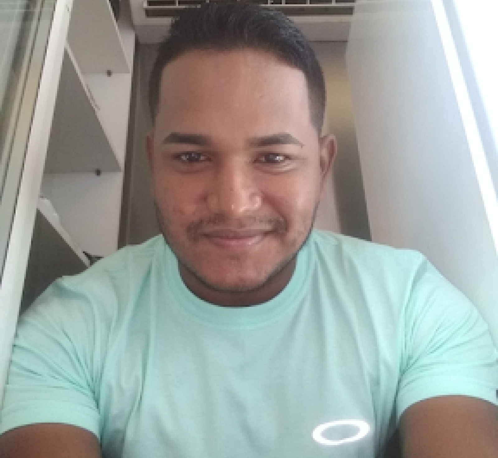

Raimundo Dione Álvaro de Araújo
Raimundo Dione Álvaro de Araújo é um profissional com uma trajetória diversificada no campo administrativo e contábil.Ingressou no curso técnico de Administração na Escola Senac, concluindo-o com sucesso em 2012.Atualmente está cursando o 4º período do curso de Engenharia de Software no IFAM Raimundo Dione dedicou quatro anos de sua carreira como técnico administrativo na Vianet Assessoria Empresarial Ltda desempenhou um papel crucial no apoio às operações administrativas e contábeis da empresa.Atualmente, Raimundo Dione Álvaro de Araújo atua como prestador de serviços para empresas de contabilidade na função de técnico.
Linkdin | Github